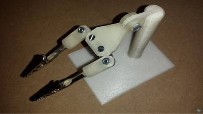
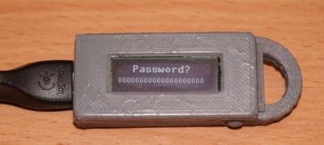

2016-11-17 - Nº 81

Editorial
Esta é a Newsletter Nº 81 que se apresenta com o mesmo formato que as anteriores. Se gostar da Newsletter partilhe-a!
Todas as Newsletters encontram-se indexadas no link.
Esta Newsletter tem os seguintes tópicos:
Faz hoje anos que nasceu August Möbius. Este matemático alemão, nascido em 1790, ficou conhecido pela sua descoberta da banda Möbius. Trata-se de uma superfície bidimensional não orientável, com apenas um lado quando embebida no espaço euclidiano tridimensional. Esta semana ficámos a saber que a Cray apresentou o seu super-computador mais rápido - o XC50 - que ultrapassa o petaflop de pico de processamento por bastidor. A arquitectura deste novo super-computador suporta quatro nós de computação cada um deles juntando o processador central com uma unidade de aceleração gráfica NVIDIA Tesla P100. Os astronautas que se encontravam a bordo da estação espacial chinesa Tiangong-2 vão regressar à Terra no foguetão Shenzhou-11. Dados da sonda New Horizon apontam para a existência de um oceano por baixo da zona gelada em formato de coração em Plutão. Por fim, a Microsemi anunciou o primeiro processador FPGA a disponibilizar uma arquitetura RISC-V assim como uma plataforma de software para o desenvolvimento para este processador.
Na Newsletter desta semana apresentamos diversos projetos de maker assim como alguns modelos 3D que poderão ser úteis.
 João Alves ([email protected])
João Alves ([email protected])
O conteúdo da Newsletter encontra-se sob a licença  Creative Commons Attribution-NonCommercial-ShareAlike 4.0 International License.
Creative Commons Attribution-NonCommercial-ShareAlike 4.0 International License.
Novidades da Semana ^
The Cray XC50 and NVIDIA Tesla P100 GPU the Next Giant Leap in Compute Performance
"Europes fastest supercomputer shoulders the challenges of the regions toughest compute problems, from weather modeling to cosmology, and across a very broad range of other scientific domains. As the computational demands for this popular resource increase due to finer resolution on climatology models, more complex scientific computations, bigger datasets, and larger simulations, and as workloads diversify, the system needs to increase in capability and evolve while maintaining a fully utilized production environment. Based on challenging requirements like these, Cray developed the XCTM series supercomputers to easily support differing processor technologies in the same architecture. By leveraging the advantages of continuously changing multicore and many-core processing devices, Cray system owners can target the most appropriate technologies to get the best possible performance out of differing applications." [...]
Shenzhou-11 separates from Tiangong-2 as astronauts prepare for reentry
"The Shenzhou-11 spacecraft separated from Tiangong-2 on Thursday after astronauts completed their work aboard the space lab in preparation for their return to Earth. The separation occured at 04:21 universal time (12:41 Beijing time) on Thursday, after Jing Haipeng and Chen Dong recovered experimental data and set up conditions for leaving Tiangong. The Shenzhou-11 return capsule will take the astronauts back into the Earth's atmosphere and to the Siziwang Banner grassland landing zone in Inner Mongola shortly after 05:33 UTC on Friday." [...]
A Hidden Ocean Beneath Pluto's Icy Heart
"In the solar system, calamitous events generally do not spell the end of worlds. A planet or moon can take a hit from an asteroid or comet. Wrenched off its previous trajectory, it might falter for a time, or tilt on its axis, or experience a dramatic reorganization of its exterior. But things will eventually stabilize. Titanic changes like these are happening at Pluto today, largely because of the iconic heart on its surface. The dwarf planets orientation in space is controlled by heavy ice in this heart, and by a massive global sea that astronomers now believe lies beneath it." [...]
Microsemi is First FPGA Provider to Offer Open Architecture RISC-V IP Core and Comprehensive Software Solution for Embedded Designs
"Microsemi Corporation, a leading provider of semiconductor solutions differentiated by power, security, reliability and performance, today announced it is the first field programmable gate array (FPGA) provider to offer a comprehensive software tool chain and intellectual property (IP) core for RISC-V designs. The company's RV32IM RISC-V core is available for Microsemi's IGLOO2 FPGAs, SmartFusion2 system-on-chip (SoC) FPGAs or RTG4 FPGAs, with an Eclipse-based SoftConsole integrated development environment (IDE) hosted on a Linux platform and the Libero SoC Design Suite providing full design support. Microsemi is the first field programmable gate array (FPGA) provider to offer a comprehensive software tool chain and intellectual property (IP) core for RISC-V designs. The company's RV32IM RISC-V core is available for Microsemi's IGLOO(TM)2 FPGAs, SmartFusion(TM)2 system-on-chip (SoC) FPGAs or RTG4(TM) FPGAs. Microsemi's new RV32IM RISC-V core, developed in collaboration with SiFive, enables customers to design with an open instruction set architecture (ISA), enabling complete portability and a more secure processor architecture governed by a permissive BSD license. RISC-V is a new ISA which is now a standard open architecture under the governance of the RISC-V Foundation. RISC-V offers a compelling soft processor solution for Microsemi's low power, reliable, secure FPGAs. The RV32IM RISC-V core unleashes a new generation of innovation for embedded designers. Now engineers can rely on an open ISA, without being tied to a single vendor and leverage open source tools and hardware. Never before has a processor allowed designers to inspect, modify, adapt, collaborate and migrate their design to the best platform for their product. Microsemi's low power FPGAs with proven security and embedded flash are a natural fit for this new paradigm. " [...]
Outras Notícias
- Intel Announces $250 Million Investment for Autonomous Driving
- TIs ultra-low power Sub-1 GHz LaunchPad development kit is first to be Sigfox verified in Japan
- Microsoft open-sources P language for IoT
- SpaceX files FCC application for internet access network with 4,425 satellites
- Baidus self-driving cars begin public test in Wuzhen, China
Ciência e Tecnologia ^
Worlds fastest quantum simulator operating at the atomic level
"Kenji Ohmori (Institute for Molecular Science, National Institutes of Natural Sciences, Japan) has collaborated with Matthias Weidemller (University of Heidelberg), Guido Pupillo (University of Strasbourg), Claudiu Genes (University of Innsbruck) and their coworkers to develop the worlds fastest simulator that can simulate quantum mechanical1) dynamics of a large number of particles interacting with each other within one billionths of a second. The dynamics of many electrons interacting with each other governs a variety of important physical and chemical phenomena such as superconductivity, magnetism, and chemical reactions. An ensemble of many particles thus interacting with each other is referred to as a strongly correlated system2). Understanding the properties of strongly correlated systems is thus one of the central goals of modern sciences. It is extremely difficult, however, to predict theoretically the properties of a strongly correlated system even if one uses the post-K supercomputer3), which is one of the worlds fastest supercomputers planned to be completed by the year 2020 in a national project of Japan. For example, the post-K cannot exactly calculate even the energy, which is the most basic property of matter, when the number of particles in the system is more than 30. Instead of calculating with a classical computer such as the post-K, an alternative concept has been proposed and referred to as a quantum simulator4), in which quantum mechanical particles such as atoms are assembled into an artificial strongly correlated system, whose properties are known and controllable. It is then used to simulate and understand the properties of another strongly correlated system, whose properties are not known. A quantum simulator could simulate quantum mechanical behavior of many particles that cannot be handled even by the post-K, expected to become a next-generation simulation platform to replace supercomputers. Huge investment to the development of quantum simulators has therefore been started recently in national projects of various countries including US, EU, and China." [...]
Researchers found mathematical structure that was thought not to exist
"In the 1970s, a group of mathematicians started developing a theory according to which codes could be presented at a level one step higher than the sequences formed by zeros and ones: mathematical subspaces named q-analogs. For a long time, no applications were found or were not even searched for for the theory until ten years ago, when it was understood that they would be useful in the efficient data transmission required by modern data networks. The challenge was that, despite numerous attempts, the best possible codes described in the theory had not been found and it was therefore believed they did not even exist. However, an international research group disagreed." [...]
Ultrafast Rechargeable Aluminum-Ion Battery
"ITRI collaborated with Stanford University to develop an ultrafast rechargeable aluminum-ion battery that is both cost-efficient and safe. This fast-charging battery can significantly resolve the issue of short lifespan plaguing other aluminum batteries. The teams research result has been published in Nature in April, and patent applications have been submitted in the US, Taiwan and filed under the Patent Cooperation Treaty. This breakthrough battery technology will compete with the traditional lead acid battery when applied in large energy storage devices, lightweight electric scooters and motorized bicycles." [...]
Meet Piccolissimo: The Worlds Smallest Self-powered Controllable Flying Vehicle
"Technology tends to move toward the bigger and better, cramming more and more features into a given product. But sometimes, less is more. Robots are often called on to do the jobs that are too dirty or dangerous for humans, such as examining the Fukushima Daiichi nuclear power plant after it experienced multiple meltdowns in the wake of a tsunami. The most advanced robots, however, were stymied by the same problems as their human counterparts; the massive amounts of radiation inside would make it a one-way trip. Smaller, simpler robots are now being developed with such applications in mind." [...]
Tiny electronic device can monitor heart, recognize speech
"Researchers from the University of Colorado Boulder and Northwestern University have developed a tiny, soft and wearable acoustic sensor that measures vibrations in the human body, allowing them to monitor human heart health and recognize spoken words. The stretchable device captures physiological sound signals from the body, has physical properties well-matched with human skin and can be mounted on nearly any surface of the body, said CU Boulder Assistant Professor Jae-Woong Jeong, one of three lead study authors. The sensor, which resembles a small Band-Aid, weighs less than one-hundredth of an ounce and can gather continuous physiological data." [...]
Modelos 3D ^
Com a disponibilidade de ferramentas que permitem dar azo a nossa imaginação na criação de peças 3D e espaços como o thingiverse para as publicar, esta rubrica apresenta alguns modelos selecionados que poderão ser úteis.
NUTCRACKER
"This nutcracker is thought to avoid the pulping of nuts which usually occurs with common nutcrackers. It actually already exists made in wood." [...]
SimpleParametricPot
"I was asked by my brother to make a pot to fit into a bulbasaur planter I had printed to give to him. I couldn't find a simple plant pot with holes in it anywhere on thingiverse so I designed it in openscad. I left it as a Customizer enabled object so you can hopefully generate one for your specifications I also attached one of the stls it could create. I think this will print fine as long as sideSlope isn't too large You can choose to not have holes by making nHoles =0 Good luck." [...]

3D Printed Helping Hands for soldering electronics
"Sometimes it is difficult to fix the components when we are soldering. So I decided to create this project. The softwere used for 3D skeches was Autodesk Inventor. To create the g.code i used the Cura softwere. The printer is Prusa I3 and the material PLA. I used some screws and nuts and two alligator clips. Here you can see how it works: https://youtu.be/K_R_oTz54Xs" [...]
CR2032 to CR2430 Adapter (SCAD)
"Adapter from a standard CR2032 to the CR2430. Added the SCAD model and made some adjustments so I can use it in the remote control." [...]
Projetos Maker ^
Diversos Projetos interessantes.
IKEA Lack Infinity Table
"Instructables are actually full of infinity tables and mirrors of all kinds and shapes, but I think IKEA Lack table is the most convenient as it's widely spread, cheap and a pretty popular coffee table." [...]
3DPOV
"Arduino sketch for my 3-dimensional persistence of vision display (runs on a Teensy 3.1). It does rotational sync using a hall sensor. Every time the hall sensor passes the magnet, an interrupt is triggered and the rotational period is measured. A timer is started that runs 100x faster than the rotational period, so that the LEDs are updated 100 times per full revolution. At each update, the program figures out where each LED row is and provides them with the image data for that location using SPI." [...]
PSoC 4: Natural Gas Leakage Alarm System for Kitchen Safety
"An Analog Heavy System that detects leakage of NG (Methane) from Stoves, Gas Cylinder, Tubes inside Kitchen & generates Audio-Visual Alerts" [...]

PasswordKeeper on Aruino Pro Micro or why keep it simple when elaborate way exists!
"It seems, that the main problem with microcontrollers for fan of electronics (especially beginners) is to find out where to apply them :) Nowaday electronics, especially digital one, is more and more looks like a black magic. Only 80-Lvl wisards are able to do something there with tiny components. That is a reason why Arduino boards become very popular. They encapsulate black magic and some smoke ;) into board with human-manageable pins. This post I want to devote to a fairly simple project, named PasswordKeeper, on the base of Aruino Pro Micro board. This board hosted ATmega32U4 chip." [...]
Arduino Vu Meter Using A Sound Sensor
"Make Leds Dance at the Music with a sound sensor and a Arduino UNO Following the Beats of music with Simple code using basic Math.What is a Vu-Meter?If you dont Know what is a Vu Meter then,A Vu Meter is a device which displays representation of a signal level in an audio equipment.In this Arduino Vu meter Project we are Going to Display this audio Signal in the form of an LED Array.All LEDs present in the Arduino vu meter array glow in a wave with the change in the volume or intensity of the sound in your surrounding.You can extend it to add more columns.Looks Cool??So lets get started!" [...]
Reprogramming Blinky kits with ICSP programming
"The Blinky kits each contain a microcontroller, which is a type of reprogrammable computer chip that can loaded with new code whenever you want. The chip used in each Blinky kit is the PIC16F1823 (PDF datasheet), a general-purpose 8-bit microcontroller made by Microchip." [...]
Rangefinder for Garage Parking With Arduino
"This simple project will help you park your car in the garage by displaying the distance from objects in front of your car's bumper. A 'Stop' message will tell you when it's time to stop. The project is based on the usuals HC-SR04 or Parallax Ping))) (tm) ultrasonic rangefinders and an Arduino board. I used the Leonardo but it should work on any other original or compatible board. For the display I chose a matrix version for its size and for aesthetic reasons." [...]
Make own remote temperature/humidity sensor
"You can buy remote Oregon sensor THGN123N for about $20 or you can built your own temperature/humidity wireless sensor that implements Oregon protocol V2.1 for about $9 and have fun! First of all, we need accurate temperature/humidity sensor to check the weather outside. In my previous project the sensor si7021 has shown perfect results, so i recommend this sensor one more time: it has great accuracy, small form-factor and low power consumption. Second, we need mobile platform with low power requirements that can run on the batteries for a long time. Again, in the previous project such a platform has been successfully built. We can use atmega328p-pu chip, running at 1 MHz. The power consumption of this system is about 5 micro Amps! Third, we need the software library for sending the signals using appropriate protocol. This library is based on the software created by Domonique Pierre, the author of software, emulated Oregon V2.1 protocol." [...]
Netatmo DualScreen Station
"Netatmo is a great weather station. I own the basic kit + extra sensor + rain gauge. The only limit of Netatmo Weather Station is that you need a Smartphone or Tablet to view informations collected by the station. Therefore, I decided to make a remote screen for my Station." [...]
Custom Multicopter Flight Controller
"Tired of spending money on flight controllers? Bored with your flight controller? Simply want to make your own flight controller? Want to add custom features to your drone? If you answered yes to any of those questions, your not alone. After this tutorial, you will be an astute student in the art of creating custom flight controllers for planes, helicopters, tricopters, quadcopters, hexacopters, octocopters, and more. We will use the the power of MultiWii's open source code and Arduino in this project. All PCB designs and potential hardware options will be shared. Good luck on your own custom PCB and enjoy!" [...]
DIY Logging Thermometer
"I wanted to make this project to learn how to integrate several modules into a working model; and also I have a practical need for monitoring temperatures in various places. The most recent need is to monitor a chicken brooder containing about 20 very young chickens (they started off as day old chicks a couple of weeks ago). In this Instructable I will describe the hardware components, the assembly, and the Arduino software. It was a big learning experience, especially the software. More on that later." [...]
How to make a robot
"Hey Everyone! Creative Robotix, now that's what we like! Have you ever wanted to imagine, create and make your very own humanoid robot with it's very own personality? We have, so we did, and we would like to share with you what we have done. Meet Timmy, the cute Android humanoid robot with attitude, he likes reading, drinking coffee, watching ducks fly past while at the park, trying out for the local football team and enjoying a relaxing evening read at home after a busy day. Our good friend Mini-Jimmy helped us imagine, design and build Timmy, we think he wanted a new play buddy all to himself while his best friend Paul (another robot) was off on his holidays. More adventures of Paul and Mini-Jimmy's big cousin Jimmy can be found in the 21st Century Robot Project book. Timmy is articulated with 5 low-cost servo motors and is an expressive little dude with differential drive, independent head and arm movements, colourful facial expressions and a voice to match. He also knows where things are, like lines on the floor and if there are obstacles in front of him. He is powered by an Arduino Nano and has Bluetooth connectivity, which allows you to program him to operate in a few different modes. In full autonomous mode he is a happy little robot independent and carefree, in interactive mode he can connect to your mobile phone and you can play with him, or in super smart mode, you can give him a 'Brain the Size of a Planet' (as Marvin, the Paranoid Android, a fictional character in The Hitchhikers Guide to the Galaxy series by Douglas Adams was said to have) and hook him into the cloud of things via your PC where he can access internet knowledge and talk to other cloud connected Creative Robotix robots out there and share experiences. The options are limitless." [...]
FM Radio With Si4703, Arduino Pro Mini and 3.3V Large LCD
"Around this time last year I published an Instructable just like this one where I used an Arduino Uno with the Si4703 evaluation board, a logic level converter and a 5V LCD to make an FM radio for my jukebox build. I decided the circuit was untidy and needed a bit of an upgrade, it also took up a lot of space in the jukebox. So I decided to use a smaller Arduino which has 3.3V logic to simplify the circuit a bit (the logic level converter is no longer needed) This Instructable is therefore about a 3.3V logic version of what I had done before." [...]
Sound Signal Generator
"So this is a sound signal generator, it is capable of generating sounds with frequencies from 100hz all the way to 3000hz. There are 2 modes on the sound generator, the first mode(Mode1) plays a scale from 100hz to 3000hz continuously going up by 100hz each interval that is 1sec. The second mode is a mode where you can change the frequency to whatever frequency you want by turning the knob on a potentiometer. Another thing about this signal generator is that you can always see the frequency of the sound the generator plays at all times on the LCD display, no matter you are in mode 1 or mode 2." [...]
Simple Arduino Home Energy Meter
"I was walking through the hardware store the other day and I walked past an energy meter which clips onto your homes electricity mains and then provides you with information on your power consumption and cost estimates for the month. I thought it looked really cool until I saw the price, it was almost five times what I thought it would be! So I decided to try and build my own and Arduino was the perfect platform for it. I had a look around online at what others had done but they all seemed to be a bit over complicated for a simple home application. Sure, for perfectly accurate measurements you need to monitor both the supply voltage and current but for simple household monitoring which gives estimates cost to the closest few cents, why not keep things simple. So this meter measures the supply current to your home through a CT (current transformer) and then does a couple of calculations to give you your current, power, maximum power and kilowatt hours consumed. Its also really easy to add your local tariff and display the cost of electricity used to date. This project assumes you know the basics of Arduino programming, otherwise read our article on getting started with Arduino, and that you know how to connect an LCD screen to an Arduino." [...]
Mini cnc - feita de aço e material reciclado
"CNC Feita por Mim em Minha casa, aproveitando as horas de folga. Sempre gostei de trabalhos manuais e eletrônica em geral, e desde que eu vi pela primeira vez uma cnc funcionando eu fiquei maravilhado com o que ela podia fazer. A Partir deste momento eu tenho amadurecido a Ideia de construir Minha Própria maquina de recorte CNC. Estou começando por um projeto piloto, que só fará desenhos e escrita a caneta, porém este será o primeiro projeto de muitos que ainda vão vim pela frente. Esse é o meu primeiro "INSTRUCTABLES" mas com certeza farei muitos ainda em breve; não só de CNC mas de muitas outras idéias que tenho em mente e quando estiverem prontas eu publicarei aqui para toda a comunidade instructables." [...]
How to Build a Portable, Accurate, Low Cost, Open Source Air Particle Counter
"This is the first Instructable in the series: How to Make, Calibrate, and Test a Portable, Accurate, Low Cost, Open Source Air Particle Counter. The second installment, How to Build a Test Chamber for Air Particle Sensors, can be found here. The third installment, How to Build a Monodisperse Particle Generator for around $300, can be found here. This is a project by Rundong Tian, Sarah Sterman, Chris Myers, and Eric Paulos, members of the Hybrid Ecologies Lab at UC Berkeley. One of the most harmful airborne pollutants with respect to human health is particulate matter. Airborne particles with a diameter of less than 10 microns (PM10) pose an especially large risk: they can travel deeply into the respiratory system, causing a variety of cardiovascular and respiratory diseases." [...]
DIY Sentinel ROV
"I wanted to make a machine which can help people, protect people from hazards or threats. So I thought of making a drone which can act as a sentinel or like a "protector" to protect people or things from harm. So the original idea was to make a general purpose ROV, to which various objects or devices can be attached as per according to requirement. I wanted it to be like a platform, which can be used to do different things or serve different purposes like, 1) a machine that could be used as a sentinel in the Army. With some modifications, it can be fitted with tactical equipment or antennas or weapons to go to places which would be too dangerous for humans. 2) or at home, a machine that could be used as a companion when someone has to go from one place to another. The drone could be modified to move autonomously and escort someone who is going alone. It could be fitted with offensive equipment which can be operated by someone sitting at home or far away, to protect someone from harm. A machine that escorts people who live alone or who have to go alone somewhere. I thought of all the above ideas and I wanted to make such a machine. A sentinel which has the sole purpose of protecting people from threats. As of now, in its current state, it has many drawbacks and is far from my original idea. But I like to think of it as my first steps towards this idea or goal." [...]
Arduino Bluetooth Car
"Hello, This is my first instrcutable on how to make a bluetooth controlled arduino car. I have been studying electronics since 9th grade and now i have finally decided to pass my knowledge to others. In order to promote DIY culture among young enthusiasts I have taken this step. A bluetooth controlled arduino car is a perfect start for beginners to learn robotics. It helps you learn basic arduino programming, controlling motors, and controlling stuff using inputs. This is also the first step towards wireless communication. You also learn how to power everything up because trust me efficient power supply is essential." [...]
Arduino Wakeup Lights
"I'm a big fan of RGB leds and Arduino, and after using them in several other projects, I decided to make a Wakeup Light for the bedroom of my two youngest children. Because my children are awake (waaaay too) early every morning, they are allowed to get up only if the Wakeup Lights are on. I used an RGB led strip, which I sticked behind my children's bunk bed. The led strip is controlled by an Arduino Mega, which has enough pins and memory to control an LCD shield with buttons and an RTC (real time clock) as well. I 3D printed a nice enclosure for all the hardware and used thin cable trays to safely tuck away all the cables. The LCD shield displays the current time and the alarm time, if set. With the buttons on the LCD shield, I can set the current time, set the alarm, set the color of the led lights (an 'animated' rainbow effect or just one static color) and set the LCD's backlight "always-on" or "auto-off after 10 seconds". When the alarm goes off, the led strip slowly fades in with my (everyone's?) daughter's favorite color: pink!" [...]
Arduino One Powered Catapult
"Before starting this Instructable, I would like to say that english is not my native lenguage, for that reason, if you do not understand what i write, please let me know and I'll do my best to correct it. No mistery here, I will be showing you how to build a catapult that works with an Arduino Uno" [...]
Spectrum Analyser Code
"Code for a spectrum analyzer. The code is to be ported to an ATTiny85 to make a project. Uses Goertzel's algorithm with a Hamming window." [...]
<img src="PM81_Esp8266With35KedeiLcdModule.jpg" alt="ESP8266 with 3.5" KeDei LCD module" style="float: left; margin: 0 10px 10px 0;">
ESP8266 with 3.5" KeDei LCD module
"This repository describes an idea of easy hack (depending on your DIY skills) of the cheap KeDei LCD 3.5" module (320x480 pixels), originally sold as a display option for Raspberry Pi, to simulate more standard LCD connection (seen in LCD modules more often) using lines: /CS, D/C, SCLK, MOSI, (MISO), sometimes called as "4-wire 8-bit data serial interface II" or "4-line serial interface". After the hack, the module can be used with my WLCD driver and ESP8266 for superfast drawing possibility (superfast in ESP8266 terms) - see video with 40 MHz clock. Why? Because KeDei is cheap, nice, but it's not optimized for speed. At least for ESP8266 and it's HSPI interface and it's long transactions (max. 512 bits / 512 CLK long). The SW subroutines to manage shift register and pulse /CS adds unnecessary slowdown. Why they just didn't set the LCD controller into serial interface mode? (ILI9488's pins IM2:0) Surely the Raspberry Pi could also manage that .. or not?" [...]
Home Monitoring With Wireless Sensor Nodes
"Do you want to build an IoT-enabled home monitoring system that can measure environmental parameters and also detect intrusion but don't know where to start? This easy tutorial will deliver everything you need with only two major components: a Raspberry Pi and a Sparrow Wireless Sensor Node kit. No soldering, and minimal wiring needed! With this system, you will be able to remotely monitor and log temperature, humidity, pressure, luminosity, IR and UV indexes and also detect intrusion. The system is also extensible, you will be able to add multiple wireless sensors to your home, monitoring every room in your house or outdoor parameters. For this project you will need a RaspberryPi, two Sparrow Wireless Sensor Nodes and two Sparrow Nest programming boards. Also, if you want intrusion detection to work, you will need a PIR sensor." [...]
LittleArm: Arduino Robot Arm
"The LittleArm started as a weekend project by the founder of Slant, Gabe Bentz. Gabe was searching for a low cost 3D printed robot arm to experiment with the Arduino. Finding none he put his 3D printer to work to create the first prototype of the LittleArm. Friends and teachers continued to ask Gabe to make kits for them so they could build the arm. That was when it became a project at Slant. Today the LittleArm is supported by a team of designers who love technology. Users can download all of the software for free and start training their LittleArm. Those with 3D printers can download the STL's and those without can purchase the kit. We at Slant love working with the LittleArm. It is one of the few designs out there that requires 3D printing, and really would not work with any other manufacturing process." [...]
Measuring weight using a load cell & PSoC
"This project describes the making of a simple weighing scale using the Cypress PSoC Analog Coprocessor and a weight/load sensor (also known as a load cell or strain gauge). A Load cell is a transducer which converts the applied force into change in resistance. The fundamental principle behind the working is the Poisson effect. The application of force on a material in one direction, leads to a deformation in the perpendicular direction. Resistances of the load cell are arranged in the form of a Wheatstone bridge. The goal is to measure this change in resistance and translate it back into the units of force (or weight). For this project, the load cell used is a TE FX1901-0001-0025L with the full scale input force of 25 lbf (11.34 kg) and the output voltage span of 20mV/V. This means that if we power the load cell with a voltage (a.k.a "excitation voltage") of 5.0V (typical PSoC VDD), the output span would be 100mV. The TE load cell encompasses a circuit similar to the Wheatstone bridge with one of the arms being the strain gauge which is sensitive to force. The load cell exposes two terminals at which the excitation voltage is to be provided, and two other terminals for the output. The differential voltage across the output is sensed using an analog front end (AFE) implemented in the PSoC Analog Coprocessor. The sensed values are translated into the corresponding mass and made accessible through an I2C interface. The project is implemented on a PSoC Analog Coprocessor kit (CY8CKIT-048) which can be connected to the PC and the output can be visualized on Bridge Control Panel software (the related configuration files LoadCell_BCP.iic and LoadCell_BCP.ini are attached). The red LED on the kit is also made to glow proportional to the sensed load." [...]

DIY Raspberry Pi Zero Handheld Game Console
"In this project I will show you how I used a Raspberry Pi Zero, NiMH batteries, a homemade over-discharge protection circuit, a rearview lcd and an audio amp to create a handheld game console that can play retro games. Let's get started!" [...]
Tiny Lisp Computer 2
"My aim in designing the first Tiny Lisp Computer was to create the smallest practical self-contained computer, with its own display and keyboard, that you could use to program in Lisp. This second version extends the original Tiny Lisp Computer with four improvements: it uses the ATmega1284 to give it more program space; it includes parenthesis matching to make it easier to enter programs; it allows you to connect it to a computer via the USB port, to enter programs from the Arduino IDE's serial monitor; and it includes a built-in program editor, to allow you to make changes to programs without having to enter them again:" [...]
Leslie Birchinator - Neopixel Arduino MIDI switch
"It's the Leslie Birchinator. Acacia missed it, it may prove poplar, knock on wood... Ok, the switch case is most likely birch. If you have ever listened to the sound of a Hammond organ playing, sometimes there is a distinctive warbly character to the sound that makes it even more special. That is when it is played through a set of Leslie rotating speakers. Leslie speakers have rotating speaker horns(fun fact: one is just for show to balance out the mechanism) and a rotating lower baffle for bass that sends the sound out in different directions as it spins. The effect it creates is a complex blend of varying the sounds loudness(amplitude modulation) and change in pitch(frequency modulation - doppler effect like in hearing a moving siren or train horn). Applying the use of the Leslie speakers or "rotary speaker" effect is part of the skill needed to play the Hammond organ. Mastering the technique to play the Hammond organ is other hard part. And that is even without bass pedals. Time to tame the beast a little. Sorry, the sound is bad since I didn't have external speakers or a direct feed set up and what you hear is from the headphones in the open. And I have to tone down the brightness of the Neopixels. Videoing a moving unicorn is tough to do. There is a animated rainbow lit ring in the slow mode and switching color sweep in the fast mode." [...]
HI-FI 4 Channel Audio Amplifier VERY Simple and CHEAP!!!!
"It's Time to Make Some nice amplifier which has nice audio quality with very low distortion and simple and quite easy to make because a circuit is very simple & very few components are required and all the pieces of stuff are easily available . Hello, Guys, this is my fourth instructable and my previous experiences were great because of you all . And now I came with an amazing 4 channel audio amp Which sounds great . Now without wasting more time I am going to tell you how to make one in very few steps !!!" [...]
3D printed Rover will be IoT.
"3D printed Mecanum Rover will be IoT. It is Mechanum Wheel Rover which can be created with 3D printer. The Mechanum Wheel can move freely to left and right, up and down, diagonal. We will control Mechanum Rover with WIFI connection. ESP8266EX is used for control." [...]
SMD 555 Timer Piano!
"Hello everybody! In this instructable I'm going to show you how to make a little piano using the common Timer 555 but with SMD components! SMD means Surface-Mount Device and those components are mounted or placed directly onto the surface of printed circuit boards. Let's get started!" [...]
PoisonTap - siphons cookies, exposes internal router & installs web backdoor on locked computers
"PoisonTap is built for the $5 Raspberry Pi Zero without any additional components other than a micro-USB cable & microSD card, but can work on other devices that can emulate USB gadgets such as USB Armory and LAN Turtle." [...]
Make Your Own Custom Shortcut Buttons With an Arduino
"The humble Arduino can do a lot of things, but did you know it can emulate a USB keyboard? You can combine those difficult to remember long keyboard shortcuts into a single custom shortcut key, with this simple circuit. " [...]
That's all Folks!